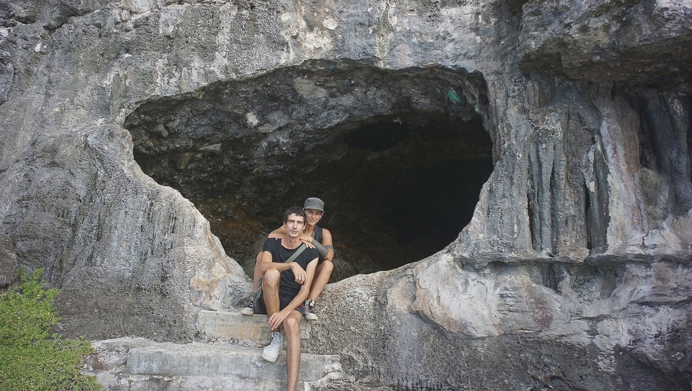
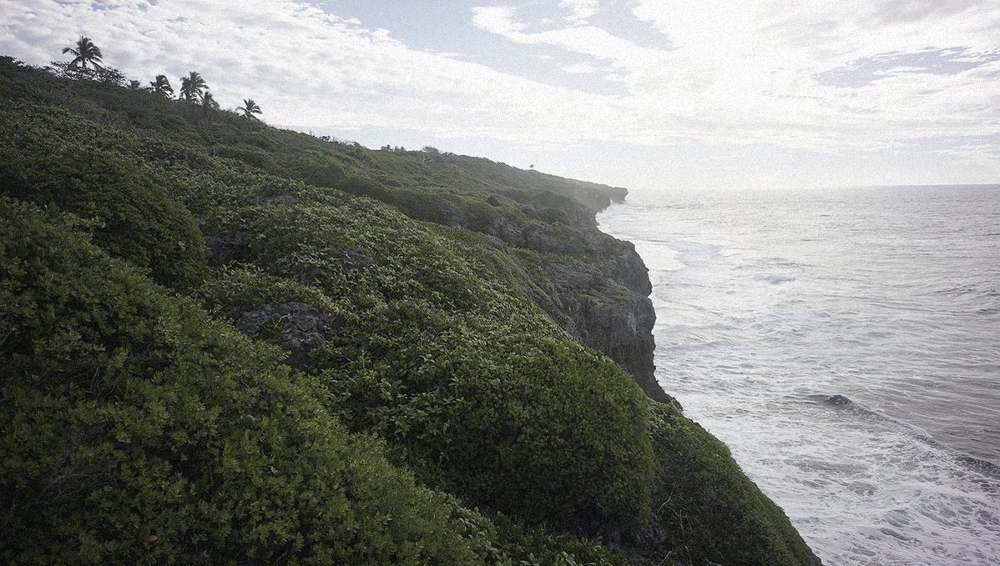
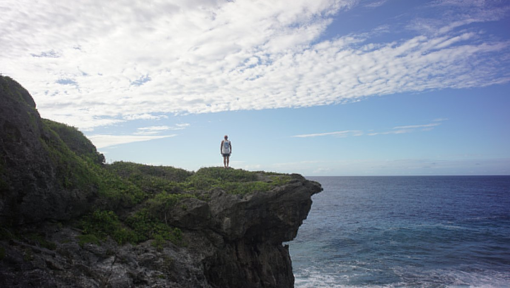
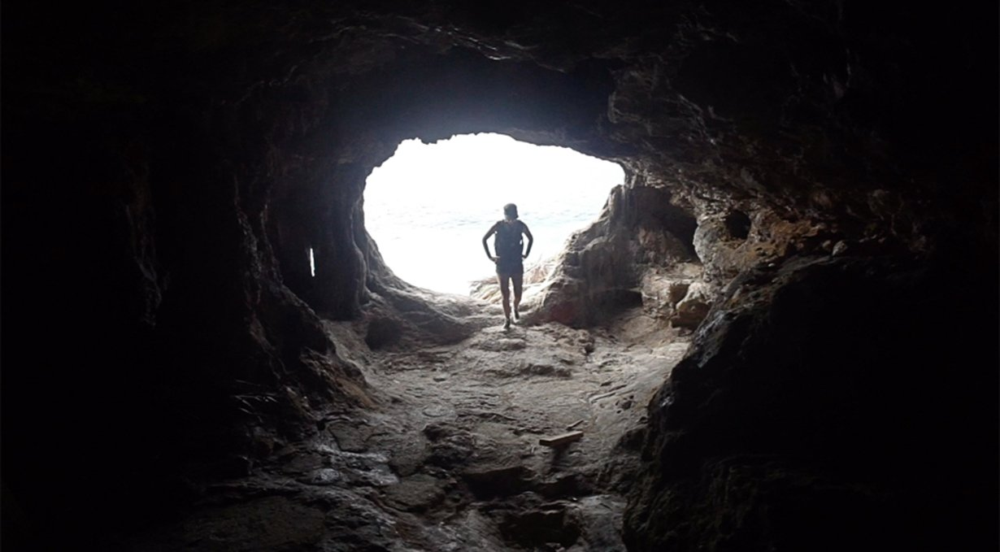
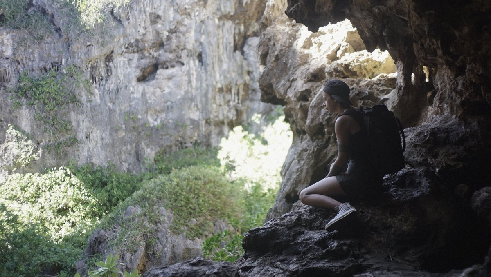

the rock of polynesia
Niue
2017.08.15
Alofi, Niue
Niue, pronounced 'New-ay', a rock in the Pacific, and one of the largest coral islands on earth. It's the first country to offer free, state-funded, wireless internet to all its residents, with the goal of being completely solar-powered.
We'd also heard that the school gave all of the kids laptops. This, with free internet, makes it a paradise for people like us. Already then, we made plans to move there—like all places in the tropics with a good internet connection and ample supply of coconut and fresh fruit. We make a home everywhere we go.
We weren't going to be staying long in Niue, but not by choice. Alofi Bay, the only anchorage on the island, is not protected in any wind other than east. If the wind turns in an unfavorable direction, staying would be dangerous and we'd be forced to leave. One other troublesome detail about the the 'rock of Polynesia', is that they hiked the departure fees from 35$ to 80$ per person. Anyone who enters Niue need pay this fee when leaving. Also, the waters around the island are very deep and full of crevices. Anchoring is discouraged, and they recommend using a mooring with a daily charge. That's a lot of money, we thought, to visit a tiny island. In truth, it's not a huge huge amount, but we had just spent $300 checking out of Rarotonga and weren't eager to pay more fees.
In hindsight, I'm glad we went, because of all the places we'd been Niue was our favorite.
We arrived at 0600, rounding the island to Alofi bay, laying on the west side. A squall lay between us and the anchorage, a puffy dark cloud with a thick wet skirt. I pulled my hood on, grabbed the helm firmly and quickly skipped through songs on my phone till I landed on anything by Purity ring.
WHOOSH! A gust of wind comes, but I'm ready. The song begins then too... 'I could build a machine—' The boat heels, '—draw pictures for the walls.' Then comes the rain. Heavy droplets, washing the salt crystals away. The squall left as quickly as it came, giving way to the sun, its face reflected in a thousand wet pools on deck. 'Hang up all my fragile frights—' I point Pino towards the anchorage. I see tall masts ahead. Signs of life. The water was a deep blue, I spotted brightly-colored floaters. '—Display that you may see.' I sing aloud, turning the music off. "We're here!" I shouted to Devine.
We tethered Pino to a mooring, a bright ball, connecting us to the ocean floor.
The water here is abnormally clear for its depth, water visibility can often reach 60 m or more as the coral and limestone filter out sediment in the water. We'd heard that humpback whales swim in the mooring field now and again, how amazing it would be to see them with such clarity. The whales came under the cover of night, we could hear them surfacing near the boat but we couldn't see them. I loved the idea of sleeping amongst giants.
Checking into Niue was simple and fast—a rare treat. They picked up Devine at the pier, along with other sailors that had arrived that same morning, and drove everyone around to various offices to sign and complete some documents.
When arriving in a new place, it is customary aboard Pino to make pancakes with maple syrup. We are down to one can. We promised to keep it for our arrival in New Zealand, to celebrate the completion of the second leg of our Pacific circumnavigation. Instead of liquid gold, we opted for a jar of bitter orange jam instead, not the same but a good alternative.
We kept the radio on that day, and overheard a conversation between two sailors, one had an unmistakable Québécois accent. One of them said that they'd checked GRIB files (a special binary format of weather data) for the area that morning, and said that the weather was supposed to shift to the west. As I mentioned before, staying in this unprotected anchorage in winds from the west was a bad idea. The Québécois explained that he had not seen this weather change. I looked at Devine, hoping that we wouldn't have to leave. We'd just arrived! We had checked the weather that same morning and did not see anything coming from the west on the GRIB files, but now we had doubts. Devine checked again, and saw nothing different. We could hear them bickering on the radio still, and they agreed to meet on the pier to discuss it further. We thought it a good idea to go, to try and untangle this mess. As it turns out, this was a mistake—phew! Somehow, one of them messed something up while checking the GRIBS. We had plenty of good weather, and time to explore the island after all.
Niue stands at 60 m above sea level at its highest, 30 m at its lowest. The pier wasn't nearly that tall, but it rose high enough to make getting onto it difficult. It had stairs carved on one side, to allow people on boats to disembark. Although these steps were slippery, and getting on with a running swell required much patience. Because of the constant wave action and current, it is safer to hoist dinghies out of the water. A powerful crane is set up on the pier to do just that. Even bigger boats make use of it. If people on the island want to fish on their boat, they need to truck their vessels over to the pier, and they've got to lower it down into the water with the crane. When done, they've got to bring it back up the same way. No boat stays in the water. Some friendly locals were on the pier at the time, and showed us how to use the crane.
iggy made use of the crane too, and was parked up alongside a few others of its kind.
Walking up to the island we passed the station powering the crane—it was solar-powered! Going up further, we saw showers that were also solar-powered. The rumors were true! Many other businesses were equipped with panels. Along the road we spotted a large gaping hole, as if someone had—à la Minecraft—carved blocks out of it. The island was full of limestone caves and chasms. We argued over the pronunciation of chasm many times. Is it ka-zim? Chya-zim?
The town of Alofi is on a road which circles the entire island. There are a few other, smaller roads that criss-cross the land. We walked to the yacht club to to let them know we'd taken one of their moorings, a young New Zealand girl was at the desk. The Commodore was on vacation, she explained, pointing to a guestbook on the desk for us to sign. The guestbook logged every yacht that came to Niue. Looking through, we smiled as we saw the names of boats we knew, now gone. We too left our mark in the log:
Pino was here, July 2017.
The yacht club had an extensive library. We spent much time there, trying to dig up some new books to read. I found a comic by Elise Gravel, funny to find this all the way out here on a tiny island in the Pacific. I then saw the name Murakami at the corner of my eye, but it was printed in Polish—damn. I spotted an old 70's vegetarian cooking book, filled with amazing and simple recipes, this one earned a place in our library. Devine was looking for penguin classics, any of them, he also hoped to find the elusive 'letters from a stoic' from Seneca. No luck. We asked the stand-in Commodore if she'd been here long. "Not long no, it's hard to get a visa to stay here." We wondered why, and she explained that Niueans can live in New Zealand, but New Zealanders can't live in Niue. Makes sense, it's not a big island and it would change it completely if there were too many foreigners around. She explained that after cyclone Heta hit the island in 2004, many Niueans had their houses demolished and left. We saw this for ourselves when driving round the south, skeletons of houses bordered the road, inhabited by ghosts and chickens.
During a visit to Hio beach, we spoke to a Niuean who had just returned from living in New Zealand. She started a new business here on the island, a cafe built inside a red container. "Niueans are coming back," she said with pride. Her cafe served the most delicious breadfruit chips, and the best—and cheapest—craft beer you'll find on the islands. Kalaga-lager (say this 5 times in a row real fast in a New Zealand accent) is a craft beer made in New Zealand only available in Niue. The beer costs less than 1 $ a can, many sailors left the island with cases of it. If Pino could stand to carry more weight, we too, would have left with more.
We walked out and continued the tour of our new neighborhood, although there was no one around. No one walking. Occasionally we'd see a car whizz by, once every 10 minutes. We walked past a small Indian restaurant, a place where we could buy data, a school, not much else. We didn't walk much further than this though, due to the presence of a stray pup who was very, very nippy. We turned around and spotted another stray, this one, not so nippy. We make a point of never touching animals we see on the street, this one was no exception. We walked past and headed over to a path leading down to a beach. The stray followed us there and eventually skipped ahead, it looked back to make sure we were still there.
"Maybe it's luring us into a trap." Devine said. We wouldn't have followed this dog into a cave, but walking down some steps to a lovely beach front, we thought, would be safe enough. Besides, the dog had plans of its own, and began to chase something we couldn't see around the beach.
The beach had beautiful clear sand, and the water was shallow with a hard coral bottom. I put my feet in it, Devine did this too, but then pointed to a shape moving in the water. "Hey look a sea snake! It's coming this way!" I wondered then. "Do sea snakes bite?" It came closer, faster. We darted back onto the sand, maybe it was very eager to say hello, but we didn't stay to find out. I later read that some sea snakes are poisonous, and that a bite results in four weeks of excruciating pain, but not in death. Pain, not death, got it.
We had another encounter with a sea snake, in a place where it was king and us mere floaters. We stood on Hio beach, and stared ahead at the long stretch of shallows we'd have to walk to get to the dive pools. A part of the shallows was soft sand, but most of it had an uneven texture that would make walking painful. Both of us, underprepared as always, were barefoot. We walked together, trying to prove to the other that this was nothing and that our feet weren't really being repeatedly penetrated by many sharp rocks.
The water barely covered my knees, then all of sudden, came a hole much deeper. We'd arrived at the pools. The pool had beautiful reef fish swimming in it, and was connected to others by tunnels or openings. We dove in, relieved to give our pained feet a break. The colors were unbelievable, we made a game of chasing each other through the different pools. This is how we met the second sea snake. I saw it near me and made a detour to avoid it. Devine was behind me at the time but had not seen it, nor understood why I'd made that particular turn. At that moment too, the snake decided to swim out of its hiding spot. I saw Devine trying to get it to swim somewhere else, pushing walls of water at it with little success.
We swam away, deciding to leave that particular pool to the sea snake. You win this round too sea snake.
We visited many other sights on the island, it's amazing how many wondrous things there are to see here. We walked a stretch of land bearing thousands of spiked coral carved by wind and sea, leading to a drop, a deep crevasse, with a hidden forest of palm trees.
We passed under giant arches of rock, around spires jutting out of the ground and into caves with walls so smooth they didn't feel real. We climbed down dark chasms, light in hand, and had a lunch of vegetable pitas in the dark next to a river of black liquid.
We swam in many other pools, in crystal clear waters, a mix of salt and fresh that made the surface water blurry.
Sometimes, as we walked in the caves, I would lose sight of Devine. Then moments later, Devine stood 10 m above ground on a ledge in that same cave, grinning down at me. I was reminded of our time in Japan, when we climbed mount Fuji. Devine was always ahead, perched up on a ledge somewhere and waiting for me, always finding some high place to stand from, and doing so with ease. Part mountain goat, part human.
We don't get to visit islands so thoroughly usually, since neither of us can drive there are places we just can't go, that is, unless someone offers us a ride. This is how we visited Niue, a place with no public transportation and with a pier that makes it impossible to bring bikes ashore.
We have Leslie and Stu from the sailboat Sula to thank for this trip, and for showing us how to open a coconut with a machete. We've since downgraded, cutting them open with a wood knife and a hammer, and I have to say, it's not nearly as cool as when Stu did it in the middle of the road with a big knife.
Watch a video of our time in Niue.